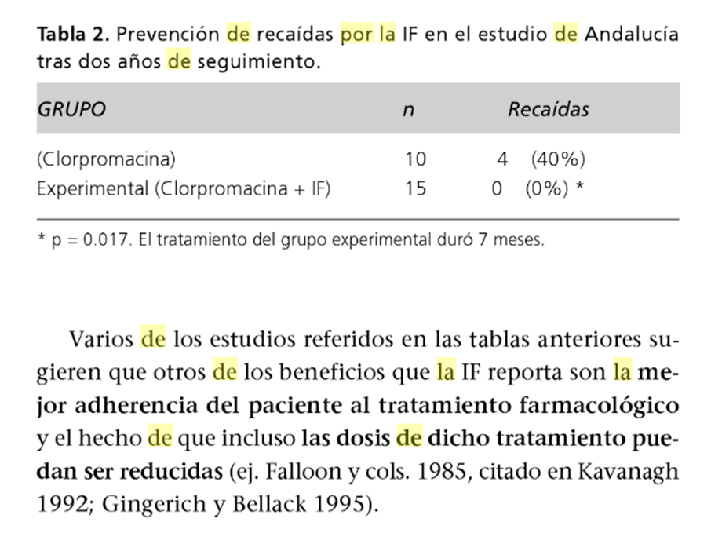

| La integración del tratamiento psicológico y farmacológico se refiere al acompañamiento que debe haber entre ambas, para que el paciente psicótico pueda equilibrarse entre el contacto con la realidad y sus síntomas psicóticos, gracias a esta interacción entre estos tratamientos resulta en que un paciente psicótico-esquizofrénico pueda mantener una vida en gran medida normal pese a las recaídas que se le puedan presentar en determinado tiempo prolongado post-tratamiento, en este sentido son igual de importantes tanto las recaídas como la que calidad de vida este activa e intacta, los síntomas que usualmente se disminuyen con la complementación de los dos tipos de terapias son el aislamiento, inhibición social y familiar, limitaciones del lenguaje, dificultades en el cuidado de la apariencia física, disminución de la actividades, etc.. Ahora bien la importancia del acompañamiento familiar y social es fundamental para la evitar los episodios de recaídas, se conoce que entre |
mayor apoyo de la familia y menos hostilidad hacia el paciente hay menos presencia de recaídas desde el inicio del tratamiento en comparación a los pacientes que no tienen dicho acompañamiento y comprensión en el área social. En las siguientes páginas de la revista se hará un análisis más minucioso sobre cómo es la interacción de los tratamientos psicológicos y farmacológicos, como se podría tratar desde las diferentes corrientes psicológicas, como actúan los medicamentos en los organismos de estos pacientes, efectos secundarios de los medicamentos, episodios psicóticos-esquizofrénicos y desempeños de estos pacientes en los diferentes entornos (social, familiar, personal, laboral, etc…). |
| Las Edades Medias representaron un período bastante triste en términos de humanidad generalmente pero las condiciones económicas eran determinado difíciles para los individuos con enfermedad sicopática. Durante la era medieval, encarcelaron en mazmorras junto a criminales o fueron bloqueados a los pacientes con psicosis hacia arriba en asilos locos. Castigos y tortura físicos implicados del Tratamiento principal. Acusaron y fueron intentados a los Hombres y a las mujeres con psicosis y otros desordenes de la salud mental a menudo para la brujería practicante. Sin Embargo, dos anomalías este falta de progreso en la exploración de la mente humana,eran filósofo Cristiano Tomás de Aquino y teólogo y científico Albertus Magnus. Desarrollaron el concepto de psicopatología, que propuso que la enfermedad mental o la locura se presentara de la dolencia física pues no era posible creído que la “alma” podría convertirse en Illinois. Mientras Que la sociedad Occidental comenzó a crecer después de que las Edades Medias y el pensamiento llegaron a ser más revolucionarios y humanitarios, la situación comenzó a mejorar para mentalmente - los individuos | enfermos. Durante la Revolución Francesa, un hombre llamó a Felipe Pinel comenzado para liberar físicamente a pacientes mentales quitando sus manillas y encadenamientos. Además, un interés científico en salud mental comenzó a emerger y a reemplazar la aproximación religiosa. La psicosis del término primero fue introducida por Karl Friedrich Constatt que la utilizó como abreviatura de la “neurosis psíquica,” cuando la neurosis después refirió a cualquier enfermedad de sistema nervioso. Constatt por lo tanto refería a un síntoma de la enfermedad de cerebro. Reconocieron un hombre llamado Ernst von Feuchtersleben también extensamente para primero usando el término en 1845, en lugar de términos tales como locura y episodio maníaco. La psicosis de la palabra origina de las palabras Griegas para la “psique” que significa el alma y el “osis” que significan la condición anormal. La psicosis del término también fue utilizada para distinguir los desordenes de la mente de la “neurosis,” que fue pensada para afectar al sistema nervioso. La Psicosis por lo tanto se convirtió en el nuevo término para la locura, y como tal, mucho discusión comenzó |
|
sobre existieron cuántos formularios de esta nueva enfermedad. En los fin del siglo XIX, un psiquiatra Alemán llamado Emil Kraepelin anunció un nuevo, aproximación “clínica” a la enfermedad mental en comparación con la “sintomático”. Él reclasificó todas las enfermedades mentales descritas hasta entonces según modelos de síntomas compartidos o los síndromes, bastante que agrupándolos basaron en los síntomas mayores. Kraepelin a menudo se considera el padre de la clasificación psiquiátrica moderna y se observa determinado para dividir psicosis en dos formularios distintos: praecox depresivo maníaco de la locura y de la demencia. El anterior incluyó un espectro entero de los desordenes de humor que colocaban de la depresión clínica unipolar a través al desorden bipolar y a otros problemas del humor. El praecox de la Demencia refirió a la enfermedad mental sin relación a los desordenes de humor y caracterizada por el deterioro sicopático y la desintegración cognoscitiva. |
Objetivo general:
Objetivo específicos:
|
| El término «psicosis» se emplea para referirse a Aquellos trastornos de la mente caracterizados por una Cierta pérdida de contacto con la realidad. Cuando una persona sufre este tipo de trastorno se dice que ha tenido un «episodio psicótico». La psicosis afecta principalmente a los jóvenes adultos y es bastante común. Cerca de 3 de cada 100 jóvenes Sufrirán un episodio psicótico, lo cual significa que entre este sector de la población la psicosis es más común que la diabetes. La mayor parte de los afectados consigue una plena recuperación del trastorno. La psicosis puede afectar a cualquiera, y como toda enfermedad, es susceptible de tratamiento. |
¿Cuáles son los síntomas? La psicosis suele provocar cambios en el estado de ánimo y en la forma de pensar, dando lugar a ideas anormales, por lo que resulta difícil entender lo que está sintiendo la persona afectada. Con objeto de comprender en qué consiste la experiencia psicótica, es útil clasificar por grupos Algunos de los síntomas más característicos.
|
|
Cuando una persona sufre por primera vez síntomas psicóticos o un episodio de psicosis, es posible que no entienda lo que le sucede. Los síntomas pueden resultarle completamente desconocidos, provocándole una gran perturbación y dejándola en un estado de confusión y angustia. Por otra parte, esta angustia se ve aumentada por los mitos y estereotipos de signo
negativo relativos a la enfermedad mental que todavía son comunes en la sociedad.El episodio psicótico se desarrolla en tres fases cuya duración respectiva varía según la persona.
1ª fase: el pródromo:
Los primeros síntomas son vagos y apenas perceptibles. En algunos casos cambia la manera en que la persona describe sus sentimientos, pensamientos y emociones.
2ª fase: aguda:
Se presentan síntomas claros de psicosis, tales como alucinaciones, delirios o ideas confusas.
|
3ª fase: la recuperación:
La psicosis tiene tratamiento y en la mayoría de los casos el paciente se recupera. Las características específicas de la recuperación varían según el caso. personas se recuperan de un primer episodio de psicosis, y en muchos casos nunca vuelven a sufrir otro.
¿Cuáles son los diferentes tipos de psicosis?
La psicosis afecta a cada persona de diferente manera y durante las etapas iniciales no siempre es útil poner un nombre o una etiqueta a la enfermedad. No obstante, cuando una persona padece psicosis, se le suele diagnosticar una enfermedad psicótica específica. «Diagnosticar» significa determinar la naturaleza de una enfermedad sobre la base de los síntomas que presenta el paciente, y el diagnóstico dependerá tanto de los factores que hayan provocado
la enfermedad como del tiempo que duren los síntomas. En el caso de un primer episodio de
psicosis, resulta particularmente difícil determinar con exactitud el tipo de psicosis de que se trata, porque aún se
|
|
desconoce en gran medida cuáles han sido los factores que la provocaron. No obstante, conviene estar familiarizado con algunos de los términos que se suelen emplear al diagnosticar diferentes tipos de psicosis.
Psicosis inducida por las drogas
El consumo de drogas o de alcohol, así como la abstinencia tras un consumo prolongado, pueden provocar síntomas psicóticos. En algunos casos los síntomas se resuelven rápidamente al irse pasando los efectos de la sustancia, en tanto que en otros la enfermedad, aunque comenzó como una psicosis inducida por drogas, se hace más prolongada.
Psicosis orgánica
A veces los síntomas psicóticos aparecen a consecuencia de lesiones de la cabeza o enfermedades orgánicas que afecten el funcionamiento del cerebro, tales como la encefalitis, el SIDA, o un tumor. En estos casos, suelen presentarse junto con la psicosis otros síntomas, tales como amnesia o confusión.
|
Psicosis reactiva breve
En ocasiones los síntomas psicóticos surgen de repente como respuesta a una situación de muchatensión en la vida de la
persona, tales como un cambio importante en sus circunstancias personales, o la muerte de un familiar. Aunque los síntomas pueden ser agudos, la persona se recupera en pocos días.
Trastorno delirante:
El síntoma principal es la firme creencia en cosas que no son ciertas.
Esquizofrenia:
El término esquizofrenia se emplea para referirse a aquellas enfermedades psicóticas en que los cambios de conducta o los síntomas persisten durante un período no inferior a los seis meses. Tanto los síntomas como la duración de la enfermedad varían según el caso, y al contrario de lo que se suele creer, muchas personas afectadas de esquizofrenia llevan una vida plena y feliz, logrando muchas de ellas una total recuperación.
|
|
Trastorno esquizofreniforme
No se distingue de la esquizofrenia, salvo en que los síntomas han persistido durante menos de seis meses.
Trastorno bipolar (maníaco depresivo)
En el trastorno bipolar, la psicosis se presenta como parte de un alteración afectiva más generalizada, caracterizada por alternancias violentas entre la gran excitación (manía) y la melancolía (depresión). En caso de presentarse síntomas psicóticos, suelen corresponder al estado anímico de la persona: por ejemplo, si está deprimida oye voces que le dicen que debe suicidarse, en tanto que si experimenta una excitación o euforia anormales, se cree un ser excepcional capaz de realizar grandes hazañas.
Trastorno esquizoafectivo
Este diagnóstico corresponde a la presencia simultánea o consecutiva tanto de síntomas de
trastorno afectivo (tales como la depresión o la manía) como de psicosis. Es decir, el cuadro clínico no es típico ni del trastorno afectivo ni de la esquizofrenia.
|
Depresión psicótica
Consiste en una depresión aguda combinada con síntomas psicóticos, sin que en ningún momento de la enfermedad se lleguen a producir períodos de manía o excitación, por lo que se distingue del trastorno bipolar.
¿Por qué la necesidad de la integración terapéutica?
Incluso manteniéndose controlados con tratamientos farmacológicos adecuados con antipsicóticos, el conjunto de estudios realizados indican que alrededor de un 50% o más de los pacientes psicóticos-esquizofrénicos experimentan una recaída importante en forma de episodio psicótico en los 2 años siguientes del diagnóstico inicial e inicio de tratamiento.
Por otra parte, dichas recaídas no son lo único importante ni el único riesgo en el curso de la esquizofrenia, de hecho se atribuye una enorme relevancia al hecho de que salvo en los episodios exacerbados de síntomas el paciente pude llevar una vida relativamente normal. Así, la margen de dichos episodios o recaídas será al menos igual de importante que su cálida de vida este el máximo de conservada a pasar de los síntomas persistentes (ejemplo, aislamiento, inhibición
|
|
social y familiar, limitaciones del lenguaje o comunicación, déficit de cuidado personal etc.) y de los déficit funcionales que conllevan tanto le trastorno en si como en las consecuencias del tratamiento farmacológicos (efectos segundarios importantes de
los fármacos), y que a su vez son aspectos que afectan que afectan severamente el bienestar de la familias. Kavanagh 1992, en Wilson 1992)Algunos estudios retrospectivos surgieron, además, que la presencia de acontecimientos vitales (Ambientales, sociales, familiares, etc.) incrementan el riesgo a corto plazo de que un paciente esquizofrénico sufra una recaída o exacerbación de síntomas que empeore una situación clínica (kavanagh 1992)
1. Abordajes conductuales.
Está claro que uno de los aspectos más importantes es el de garantizar la adherencia del tratamiento por partes de los pacientes, es crítico, por los tratamientos crónicos (muy prolongados) con antipsicóticos son, hasta hoy, la norma y el modo
|
de que los pacientes puedan recuperar una cierta calidad de vida, en muchos casos casi normal. Y es también critico porque dichos tratamientos tiene importantísimos efectos segundarios en porcentajes muy notables de pacientes. Algunos procedimientos para garantizar la adherencia del tratamiento son: asegurarse de que el paciente entienda la instrucciones; uso de señales asociadas al recuerdo de tratamiento (ejemplo debe tomársela durante la comida, o cuando ve determinado programa de televisión etc.) o de reforzamiento; supervisión por parte de sus familiares; promover la medicación en forma de inyecciones que son administradas por personal médicos y a intervalos de 2 a 4 semanas ( en lugar de diariamente como ocurre con las píldoras u otros fármacos orales)
2. Abordaje conductual.
control de déficit funcionales, en pacientes esquizofrénicos crónicos mediantes abordajes conductuales como el de la economía de fichas que deben ser alcanzadas por la familia y el paciente:
|
|
|
|
Tabla 1.
Resultandos terapéuticos, en cuanto a la prevención de recaídas (%), de la intervención familiar (IF) combinada con tratamiento farmacólogo respecto al tratamiento farmacológico con antipsicóticos pero sin IF (AP).
|
|  |